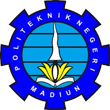

|
 |
| Nama Mahasiswa | : Naufal Gavin Nadhif Annafi | Jurusan | :Teknik |
| NIM | :253307050 | Program Studi | :Teknologi Informasi |
| No | Kode MK | Mata Kuliah | SKS | Kelas | Dosen Pengampu |
|---|---|---|---|---|---|
| 1 | MKU2201 | Agama Islam | 2 | 2B | Dr. Nanik Nurhayati, S.Ag., M.Pd. |
| 2 | TI22202 | Pemrograman Mobile 1 | 2 | 2B | Sigit Kariagil Bimonugroho, S.Kom., M.T. |
| 3 | TI22203 | Praktik Pemrograman Mobile 1 | 2 | 2B | Sigit Kariagil Bimonugroho, S.Kom., M.T. |
| 4 | TI22204 | Manajemen Resiko Proyek | 2 | 2B | Lutfiyah Dwi Setia, S.Kom., M.Kom. |
| 5 | TI22205 | Pemrograman Berbasis Obyek | 2 | 2B | Ikhwan Baidlowi Sumafa, S.Kom., M.Kom. |
| 6 | TI22206 | Praktik Pemrograman Berbasis Obyek | 2 | 2B | Ikhwan Baidlowi Sumafa, S.Kom., M.Kom. |
| 7 | TI22207 | Desain & Pemrograman Web | 2 | 2B | Ardian Prima Atmaja, S.Kom., M.Cs. |
| 8 | TI22208 | Praktik Desain & Pemrograman Web | 2 | 2B | Ardian Prima Atmaja, S.Kom., M.Cs. |
| 9 | TI22209 | Sistem Operasi | 2 | 2B | Hendrik Kusbandono, S.Kom., M.Kom. |
| 10 | TI22210 | Praktik Sistem Operasi | 2 | 2B | Hendrik Kusbandono, S.Kom., M.Kom. |
| Jumlah | 20 | ||||
| Mahasiswa, | Madiun, 3 Februari 2023 Dosen Pembimbing Akademik, |
Naufal Gavin Nadhif Annafi 253307050 |
Gus Nanang Syaifuddin, S.Kom., M.Kom. NIDN. 0714088904 |